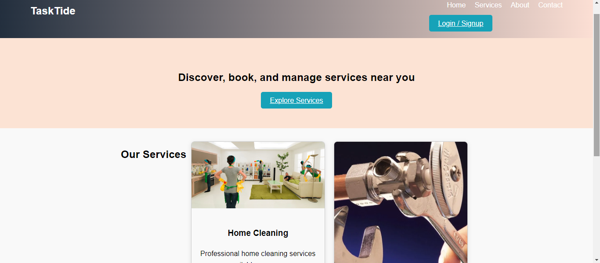

Projects
ImproveProjectsHome-Decor

Improve Projects Home Decor is led by Jonathan Mauto, a skilled craftsman with years of experience in the building and trades industry. Our team is dedicated to delivering superior results, using quality materials and proven techniques to ensure lasting satisfaction for our clients. View Live | GitHub Repo

7overeign Official Website
.png)
Welcome to the official website of 7overeign, an indie pop, rock, rap, and trap artist redefining the music scene. Explore the latest music, including exclusive visualizers, music videos, and behind-the-scenes content. Stay updated on upcoming merchandise and tour dates, and get access to a range of exciting fan experiences. With a modern, sleek design and a dark theme highlighted by vibrant accent colors, this website offers an engaging and user-friendly experience for fans to connect with 7overeign's music journey. View Live | GitHub Repo
TaskTide
TaskTide is a localized service marketplace web application where people can find, book, and review various service providers. View Live | GitHub Repo
Jae's Web Hub

At Jae's Web Hub, we connect businesses to the digital world by providing affordable, user-friendly web development and digital solutions. From website creation to custom digital strategies, we help businesses grow online.View Live | GitHub Repo